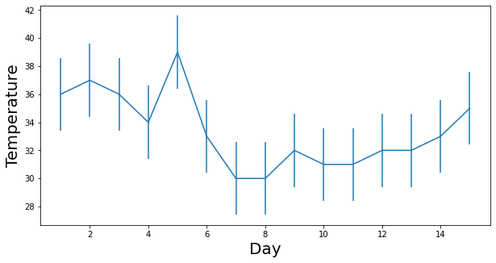

Mean , Variance , Standard Deviation
Source
1.) Mean , Variance , SD => https://www.mathsisfun.com/data/standard-deviation.html
import pandas as pd
import matplotlib.pyplot as plt
import seaborn as sns
import math
import numpy as npdef calculate_mean(data):
total = 0
for element in data:
total += element
return total / len(data)def calculate_variance(data , mean):
total = 0
for element in data:
total = total + (element - mean)**2
return total def calculate_standard_deviation(variance):
return math.sqrt(variance)chennai_temp = [36,37,36,34,39,33,30,30,32,31,31,32,32,33,35] #temp in celcius
x_axis = np.arange(1,16) #for 15 days tempx_axis x_axisarray([ 1, 2, 3, 4, 5, 6, 7, 8, 9, 10, 11, 12, 13, 14, 15])
temp_mean = np.mean(Chennai_Temp)
temp_sd = np.std(Chennai_Temp)
print( ' Mean : {} , Standard Deviation : {} '.format(temp_mean , temp_sd)) Mean : 33.4 , Standard Deviation : 2.6025628394590843
plt.figure(figsize = (10,5))
plt.xlabel('Day' , fontsize = '20')
plt.ylabel('Temperature' , fontsize = '20')
plt.errorbar(x_axis , chennai_temp , yerr = temp_sd)<ErrorbarContainer object of 3 artists>
